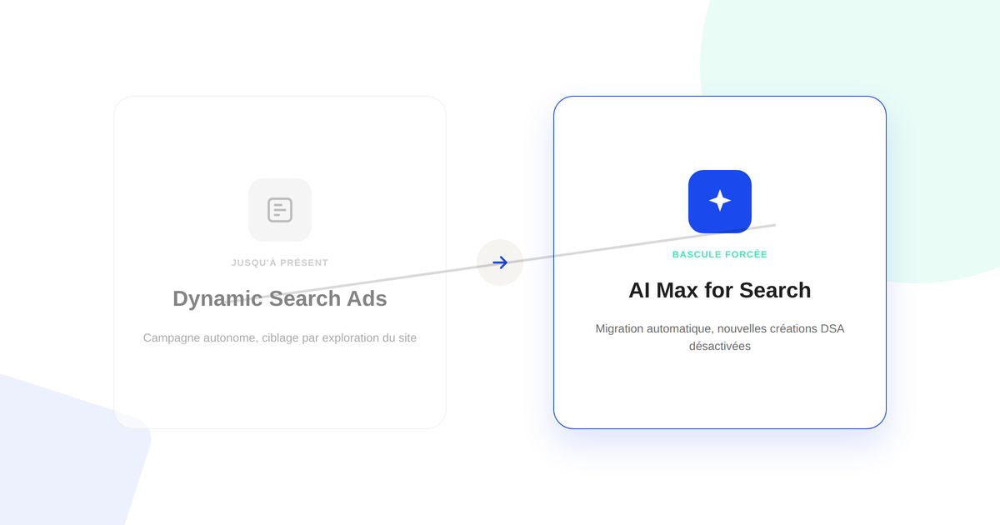
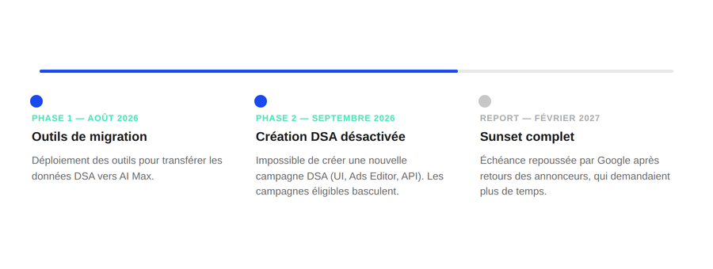

Dynamic Search Ads : la bascule forcée vers AI Max, et ce qu'il faut vérifier
Google l'a confirmé sur son propre blog : les campagnes Dynamic Search Ads basculent automatiquement vers AI Max, et il n'est déjà plus possible d'en créer de nouvelles. Si vous gérez des campagnes Google Ads, voici ce qui a changé, le calendrier réel, et ce qu'il faut vérifier avant que ça ne se fasse sans vous.

C'est le genre d'annonce qui passe facilement inaperçue dans un changelog, alors qu'elle touche directement des campagnes en cours : Google a confirmé sur son blog officiel que les campagnes Dynamic Search Ads (DSA) basculent automatiquement vers AI Max for Search — le même type d'automatisation déjà à l'œuvre sur Performance Max. Ce n'est pas une option à activer : c'est une migration forcée, déjà en cours.
Ce qui vient de changer
Google avait annoncé dès avril 2026 qu'AI Max for Search sortait de bêta. Depuis septembre 2026, trois types de campagnes sont concernés par la bascule automatique : les campagnes Dynamic Search Ads, celles qui utilisent la correspondance large (broad match) au niveau campagne, et celles qui s'appuient sur les éléments créés automatiquement (Automatically Created Assets). Point le plus concret pour qui gère des comptes au quotidien : il n'est déjà plus possible de créer une nouvelle campagne DSA, que ce soit depuis l'interface Google Ads, Google Ads Editor ou l'API Ads.
Le calendrier confirmé par Google
Le déploiement se fait en plusieurs phases, et l'échéance finale a déjà bougé une fois.
- Phase 1 (jusqu'à août 2026). Déploiement des outils de migration permettant de transférer les données d'une campagne DSA vers AI Max sans tout reconstruire depuis zéro.
- Phase 2 (depuis septembre 2026). Création de nouvelles campagnes DSA désactivée sur les trois interfaces (Google Ads, Ads Editor, API). Les campagnes existantes éligibles basculent vers le nouveau cadre.
- Sunset complet repoussé à février 2027. L'échéance initiale, fixée à septembre 2026, a été reportée après que Google a reçu des retours d'annonceurs qui avaient besoin de plus de temps pour achever leur transition.

Ce qu'AI Max change concrètement
- Un système unique plutôt que des réglages séparés. AI Max combine dans un seul mécanisme piloté par l'IA la correspondance par recherche (search term matching), la personnalisation du texte des annonces, et l'expansion d'URL finale — jusque-là gérés plus séparément en DSA classique.
- Un gain de performance annoncé par Google lui-même. L'éditeur indique un gain moyen de 7 % de conversions ou de valeur de conversion, à CPA ou ROAS similaire, en utilisant l'ensemble des fonctionnalités d'AI Max plutôt que la correspondance par recherche seule. C'est un chiffre communiqué par Google — à vérifier sur vos propres comptes plutôt qu'à prendre comme une garantie.
- Moins de contrôle manuel sur le ciblage. Comme pour Performance Max avant lui, le passage à AI Max déplace une partie des décisions de ciblage vers l'algorithme — ce qui rend le reporting et la lecture des rapports de termes de recherche d'autant plus importants pour garder un œil sur ce qui se passe réellement.
Ce qu'il faut vérifier sur vos comptes dès maintenant
- Identifiez vos campagnes concernées. Repérez dans votre compte les campagnes DSA actives, les campagnes Search en correspondance large au niveau campagne, et celles avec éléments créés automatiquement — ce sont les trois profils touchés par la bascule.
- Vérifiez l'état de la migration campagne par campagne. Une campagne déjà basculée a une structure différente de son équivalent DSA d'origine : contrôlez que le ciblage et les exclusions n'ont pas été perdus dans le processus.
- Surveillez le rapport de termes de recherche de près dans les semaines qui suivent une bascule : c'est le signal le plus rapide pour détecter un ciblage qui dérive.
- N'attendez pas février 2027 pour vous en préoccuper. La fenêtre de transition existe précisément pour éviter une bascule subie en urgence — autant s'en servir maintenant que la découvrir au dernier moment.
FAQ
Mes campagnes Dynamic Search Ads vont-elles disparaître du jour au lendemain ?
Non. Google a repoussé l'échéance du sunset complet à février 2027 après les retours des annonceurs, qui demandaient plus de temps. Mais depuis septembre 2026, il n'est déjà plus possible de créer une nouvelle campagne DSA, et les campagnes existantes basculent progressivement vers AI Max.
Les campagnes en correspondance large sont-elles concernées aussi ?
Oui. La bascule concerne trois cas : les campagnes Dynamic Search Ads, celles utilisant la correspondance large au niveau campagne, et celles avec les éléments créés automatiquement (Automatically Created Assets).
Que change concrètement AI Max par rapport à une campagne DSA classique ?
AI Max combine la correspondance par recherche, la personnalisation du texte des annonces et l'expansion d'URL finale dans un seul système piloté par l'IA. Google indique un gain moyen de 7 % de conversions ou de valeur de conversion à CPA ou ROAS similaire en utilisant l'ensemble de ces fonctionnalités plutôt que la correspondance par recherche seule — un chiffre communiqué par l'éditeur, à vérifier sur vos propres comptes.
Envie d'y voir clair sur vos campagnes Google Ads ?
Pour aller plus loin, voir la page SEA et la page Analytics.
À lire aussi : Performance Max : reprendre la main sur une boîte noire publicitaire.
Pour continuer sur ce sujet.